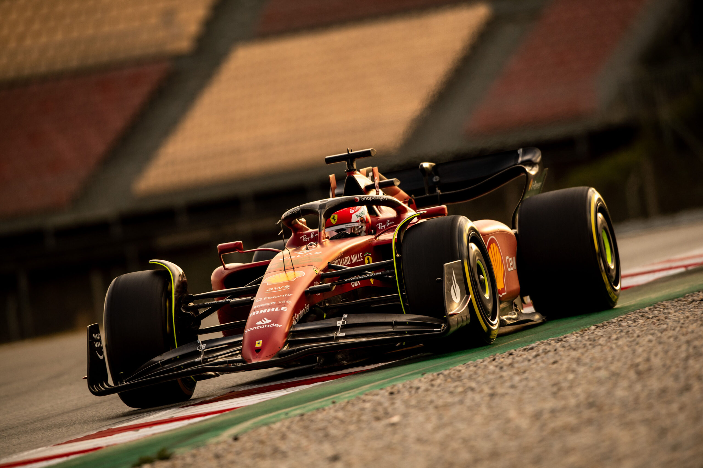
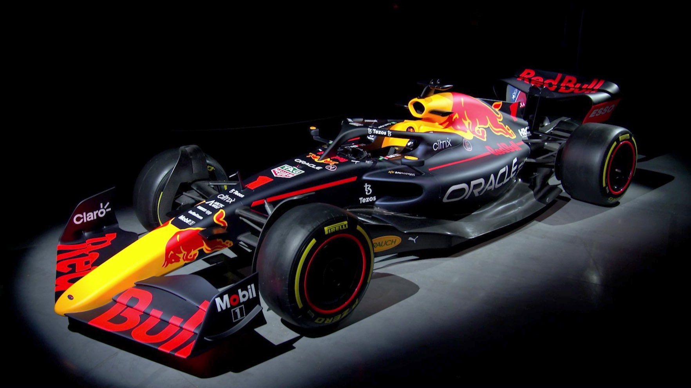

Introducing W13, the Mercedes-AMG Petronas F1 Team's challenger for 2022.
"Ever since work on W13 began, I have seen an excited enthusiasm in our team members like never before, thanks to the scale of opportunity that these technical regulations provide," said Toto Wolff, Team Principal & CEO of the Mercedes-AMG Petronas F1 Team. "Towards the end of the year when the car build project truly came together, I felt a deep passion across the whole organisation, not only in the technical arena but across our bases at Brackley and Brixworth who were embracing a mindset of 'we can do this'"
"We did pretty well during the last big regulatory change into the hybrid era and performed well when we went from the narrow to the wide cars in 2017. While we have a good track record, my message is clear: we can't rely on past success for this year's performance, but we can rely on our people, our culture, our structure, and our mindset to do the best possible job for 2022", continued Toto.
The W13 is the product of a complete redesign from top to bottom, with the steering wheel the only carryover element from its predecessor. Operating with a blank slate and such a steep development curve has been a stimulating experience for the engineers at the team's Brackley base and something they've relished.

Discover the Ferrari F1-75, Ferrari's car for the 2022 season
"This is an important day for us as we launch our car, the Ferrari F1-75. I must admit that personally, I'm excited about it, as this car is a product of the effort, dedication and passion of each one of us. It's down to the work of a group of people who have invested everything in this car, working with courage, creativity and team spirit," said Team Principal Mattia Binotto.
"We have a good team of people here who have gone from strength to strength, investing all their skills in this project and I am proud of them. We have tackled the challenged of this project with an innovative approach, because, apart from the requirements of the completely new technical regulations, we believe that we had to take on this exercise with an open mind."
The effectiveness of the venturi tunnel shape in lowering the air pressure of the underside (and therefore increasing the downforce) will determine how strongly the airflow is pulled into those venturi inlets. The sizing and shape of those inlets is therefore crucial. The cooling arrangement has to be configured around that aerodynamic requirement.

The RB 18, RedBulls car for the 2022 F1 season
After a year's delay due to COVID-19, the massive changes originally planned for 2021 make their debut in 2022. Tight financial regulations will constrain spending and revised sporting regulations will reshape race weekends. However, it's in the technical regulations that the biggest changes are occurring, as F1 ushers in a new generation of cars designed for closer racing and more action. Welcome to the RB18…
Oracle Red Bull Racing today charged into a new generation of Formula One competition as defending F1 World Champion Max Verstappen put the Team's all-new RB18 car through its paces at a pre-season shakedown in Spain.
The 2022 season features the most extensive set of regulation changes ever seen in F1 and the clean-sheet approach to the sport's technical regulations have resulted in a radically different look for the RB18.